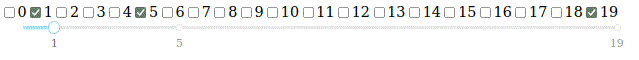

from dash import dcc, html, Input, Output, callback
from jupyter_dash import JupyterDash
from IPython.display import clear_output
app = JupyterDash(__name__)
options = list(range(0,20))
value = [1,5]
lst_val_to_slider_marks = lambda value: {val:str(val) for val in value}
app.layout = html.Div(
[
dcc.Checklist(
options,
value = value,
id = "check-lst",
inline = True
),
dcc.Slider(
min(options), max(options),
step = None,
marks = lst_val_to_slider_marks(value),
id = "slider"
)
],
style={'display': 'flex', 'flex-direction': 'column'}
)
@callback(
Output("slider", "marks"),
Input("check-lst", "value")
)
def my_callback(val):
return lst_val_to_slider_marks(val)
if __name__ == '__main__':
app.run_server(debug=True)
clear_output()Experiments with plotly dash
Sources
Callbacks
It is a mechanism that allows you to create a function that will be called when you perform an action. It realised. This is implemented via the dash.callback decorator. More details in the documentation. I will focus on some practical features.
Input/output format
Input/Output, implemented by dash.Input/dash.Output, which should be passed as arguments to the callback decorator. Constructors of the classes require the following syntax ("<object-id>", "<property>"), so you can choose which property to pass to the callback and which to change.
In the following example, I simply take dcc.Checklist.values and link it to ddc.Slider.marks - the markers on the dcc.slider will exactly match the selected checkboxes on the dcc.checklist.
In site it will looks like:

Any check box you click - it will add one more marker on slider.
Callback without output
It turns out that dash has no callback mechanism without output. So the only tricky way is to create a dummy object and set it as the output object. In the following example, I use html.Div(id='dummy'), or rather its children property. I also print out some messages with changes to dcc.Checklist to prove that everything is working.
from dash import dcc, html, Input, Output, callback
from jupyter_dash import JupyterDash
from IPython.display import clear_output
app = JupyterDash(__name__)
check_values = ["value1", "value2", "value3"]
app.layout = html.Div([
html.Div(id='dummy'),
dcc.Checklist(
check_values,
id = "check-lst"
)
])
clicks_counter = 0
@callback(
Output("dummy", "children"),
Input("check-lst", "value")
)
def test_callback(checklist_value):
global clicks_counter
clicks_counter += 1
print("==========================")
print(f" CLICK {clicks_counter} ")
print("==========================")
print("-------value-------")
print(checklist_value)
return None
if __name__ == '__main__':
app.run_server(debug=True)
clear_output()==========================
CLICK 1
==========================
-------value-------
None
==========================
CLICK 2
==========================
-------value-------
['value2']
==========================
CLICK 3
==========================
-------value-------
['value2', 'value3']
==========================
CLICK 4
==========================
-------value-------
['value2', 'value3', 'value1']
==========================
CLICK 5
==========================
-------value-------
['value2', 'value3']
==========================
CLICK 6
==========================
-------value-------
['value3']